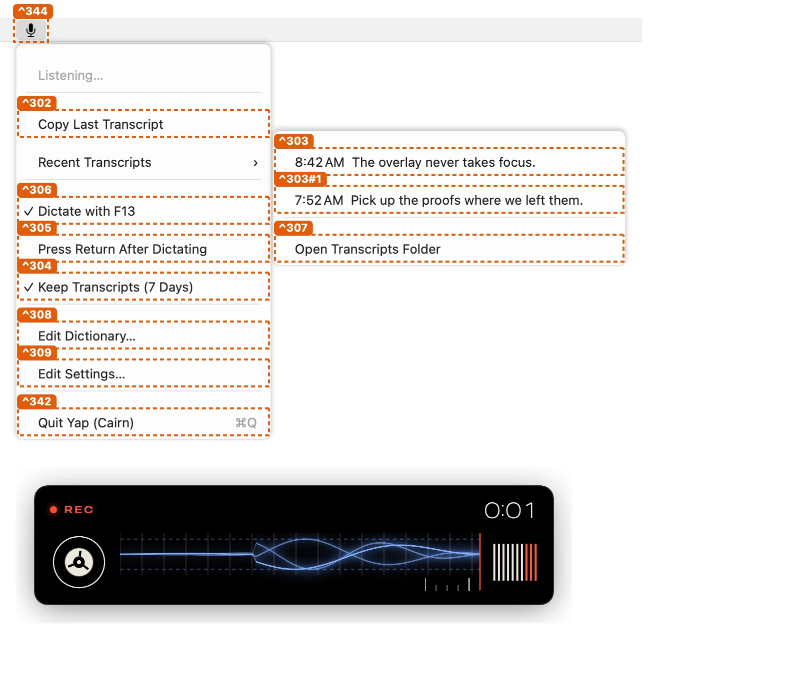

Yap · place ^399
Overlay panel
Yap's panel at the bottom of the screen, over every app, that never takes focus or clicks, drawn as the original's: the phase (REC, hands free, transcribing, typed, not typed) with a glowing dot and a clock that stops when recording does, the tape (the original's shader: the scope, the ruler, the reel and the meter, from the microphone's levels and the preview's cuts) and the live transcript's last 280 characters; when the text changes the panel eases to its new height over 0.15 s as the original's does, new text fading in and old text fading out. Hidden 1.5 s after a transcript is typed and 4 s after one fails.
seen